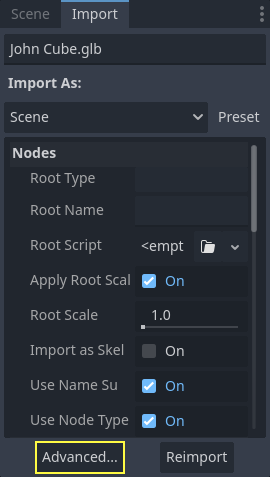
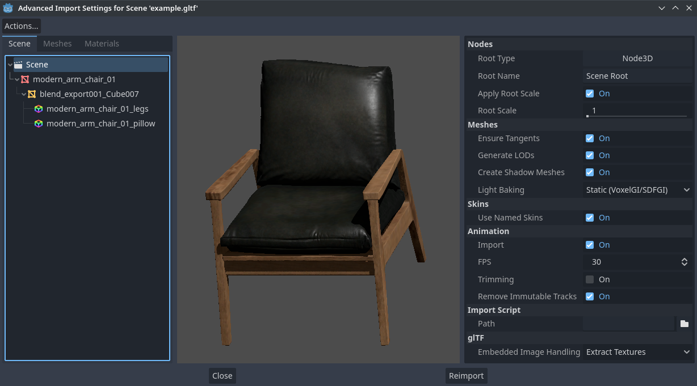
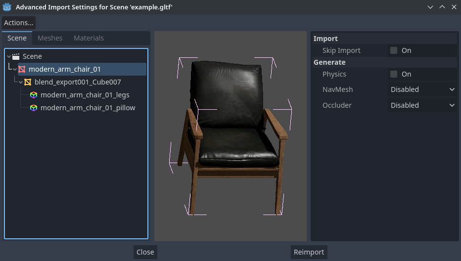
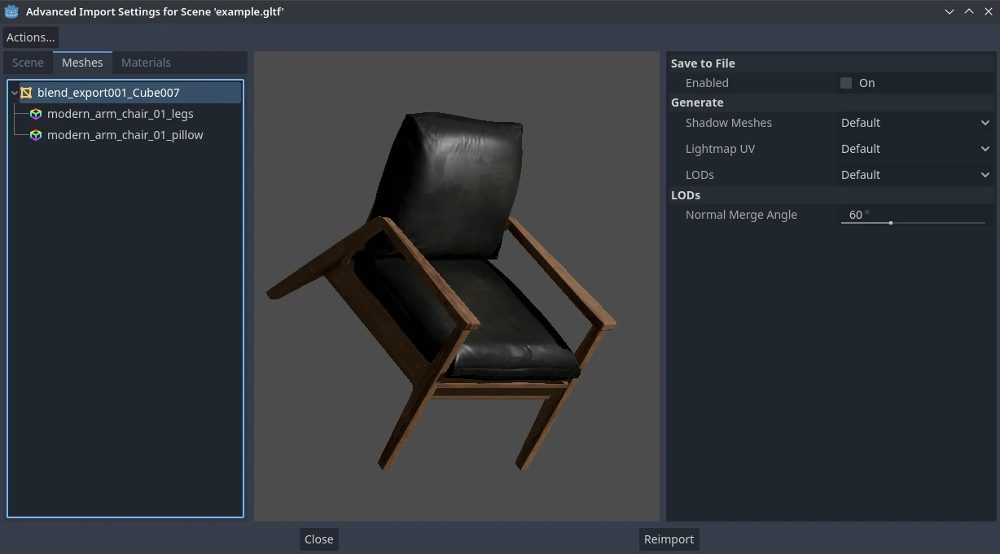
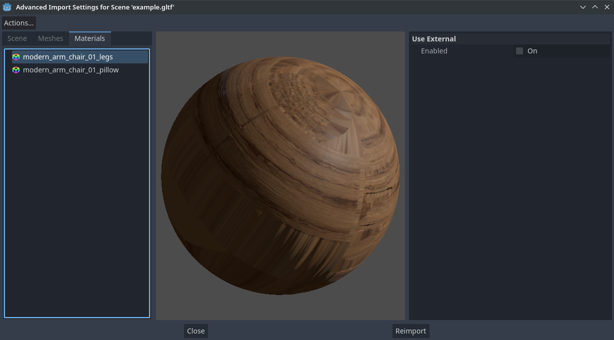
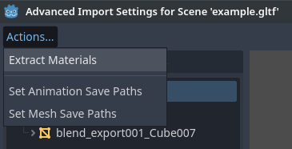
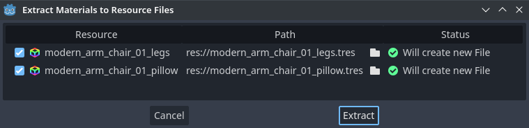

Cài đặt import nâng cao
Trong khi bảng import thông thường cung cấp nhiều tùy chọn thiết yếu cho các mô hình 3D được import, cài đặt import nâng cao cung cấp tùy chọn cho từng đối tượng, xem trước mô hình và xem trước hoạt ảnh. Để mở nó, hãy chọn nút ở cuối Import dock.

Tính năng này có sẵn cho các mô hình 3D được import dưới dạng scene, cũng như cho các thư viện hoạt ảnh.
Ghi chú
Trang này không đề cập đến các tùy chọn cũng có trong Import dock, hay bất cứ thứ gì nằm ngoài cài đặt import nâng cao. Để biết thông tin về những nội dung đó, vui lòng đọc trang Cấu hình import.
Sử dụng hộp thoại Advanced Import Settings
Tab đầu tiên bạn thấy là tab Scene. Các tùy chọn trong bảng bên phải giống hệt Import dock, nhưng bạn có thêm bản xem trước 3D. Có thể xoay bản xem trước 3D bằng cách giữ chuột trái rồi kéo chuột. Có thể điều chỉnh thu phóng bằng con lăn chuột.

Hộp thoại Advanced Import Settings (tab Scene). Nguồn: Modern Arm Chair 01 - Poly Haven
Cấu hình tùy chọn import của node
Khi ở tab Scene, bạn có thể chọn từng node cấu thành scene bằng cây hiển thị ở bên trái:

Chọn một node trong hộp thoại Advanced Import Settings (tab Materials)
Thao tác này hiển thị một số tùy chọn import cho từng node:
Skip Import: Nếu được đánh dấu, node sẽ không có mặt trong scene import cuối cùng. Bật tùy chọn này sẽ vô hiệu hóa mọi tùy chọn khác.
Generate > Physics: Nếu được đánh dấu, tạo một node cha PhysicsBody3D với các collision shape là anh em (sibling) của node MeshInstance3D.
Generate > NavMesh: Nếu được đánh dấu, tạo một node con NavigationRegion3D cho điều hướng. Mesh + NavMesh sẽ giữ mesh gốc hiển thị, còn NavMesh Only sẽ chỉ import navigation mesh (không có phần hiển thị). NavMesh Only dành cho trường hợp bạn đã tự tạo thủ công một mesh đơn giản hóa cho điều hướng.
Generate > Occluder: Nếu được đánh dấu, tạo một node anh em OccluderInstance3D cho occlusion culling, dùng hình học của mesh làm cơ sở cho hình dạng của occluder. Mesh + Occluder sẽ giữ mesh gốc hiển thị, còn Occluder Only sẽ chỉ import occluder (không có phần hiển thị). Occluder Only dành cho trường hợp bạn đã tự tạo thủ công một mesh đơn giản hóa cho occlusion culling.
Các tùy chọn sau chỉ hiển thị nếu một số tùy chọn ở trên được bật:
Physics > Body Type: Chỉ hiển thị nếu Generate > Physics được bật. Điều khiển loại PhysicsBody3D sẽ được tạo. Static tạo StaticBody3D, Dynamic tạo RigidBody3D, Area tạo Area3D.
Physics > Shape Type: Chỉ hiển thị nếu Generate > Physics được bật. Trimesh cho phép va chạm chính xác theo từng tam giác, nhưng chỉ dùng được với loại body Static. Các loại khác kém chính xác hơn và có thể cần cấu hình thủ công, nhưng dùng được với mọi loại body. Với hình học tĩnh của level, hãy dùng Trimesh. Với hình học động, hãy dùng các hình dạng cơ bản nếu có thể để có hiệu năng tốt hơn, hoặc dùng một trong các chế độ phân rã lồi (convex decomposition) nếu hình dạng lớn và phức tạp.
Decomposition > Advanced: Chỉ hiển thị nếu Physics > Shape Type là Decompose Convex. Nếu được đánh dấu, cho phép điều chỉnh các tùy chọn phân rã nâng cao. Nếu tắt, chỉ có thể điều chỉnh preset Precision (thường là đủ).
Decomposition > Precision: Chỉ hiển thị nếu Physics > Shape Type là Decompose Convex. Điều khiển độ chính xác dùng cho phân rã lồi. Giá trị cao hơn cho va chạm chi tiết hơn, đổi lại việc tạo chậm hơn và tăng mức sử dụng CPU khi mô phỏng vật lý. Để cải thiện hiệu năng, bạn nên giữ giá trị này thấp nhất có thể cho các trường hợp sử dụng của mình.
Occluder > Simplification Distance: Chỉ hiển thị nếu Generate > Occluder được đặt thành Mesh + Occluder hoặc Occluder Only. Giá trị cao hơn tạo ra occluder mesh có ít đỉnh hơn (giúp giảm mức sử dụng CPU), đổi lại sẽ có nhiều vấn đề occlusion culling hơn (như dương tính giả hoặc âm tính giả). Nếu bạn gặp tình trạng đối tượng biến mất khi không nên biến mất lúc camera ở gần một mesh nhất định, hãy thử giảm giá trị này.
Cấu hình tùy chọn import của mesh và material
Trong hộp thoại Advanced Import Settings, có 2 cách để chọn từng mesh hoặc material:
Chuyển sang tab Meshes hoặc Materials ở góc trên bên trái của hộp thoại.
Ở lại tab Scene, nhưng mở rộng các mục trong cây hiển thị ở bên trái. Sau khi chọn một mesh hoặc material, thông tin hiển thị giống như ở tab Meshes và Materials, nhưng ở dạng cây thay vì danh sách.
Nếu bạn chọn một mesh, các tùy chọn khác sẽ xuất hiện trong bảng bên phải:

Hộp thoại Advanced Import Settings (tab Meshes)
Các tùy chọn như sau:
Save to File: Lưu resource class_Mesh vào một tệp bên ngoài (đây không phải tệp scene). Thông thường bạn không cần dùng tùy chọn này để đặt mesh vào scene 3D – thay vào đó, bạn nên tạo instance trực tiếp scene 3D. Tuy nhiên, việc truy cập trực tiếp resource Mesh lại hữu ích với một số node cụ thể, như class_MeshInstance3D, class_MultiMeshInstance3D, class_GPUParticles3D hoặc class_CPUParticles3D. - Bạn cũng cần chỉ định đường dẫn tệp đầu ra bằng tùy chọn xuất hiện sau khi bật Save to File. Bạn nên dùng phần mở rộng tệp đầu ra
.resđể có kích thước tệp nhỏ hơn và tốc độ tải nhanh hơn, vì.treskhông hiệu quả khi ghi lượng dữ liệu lớn.Generate > Shadow Meshes: Ghi đè cho từng mesh đối với tùy chọn import áp dụng toàn scene Meshes > Create Shadow Meshes được mô tả trong Sử dụng Import dock. Default sẽ dùng tùy chọn import của toàn scene, còn Enable hoặc Disable có thể buộc bật hoặc tắt hành vi này trên một mesh cụ thể.
Generate > Lightmap UV: Ghi đè cho từng mesh đối với tùy chọn import áp dụng toàn scene Meshes > Light Baking được mô tả trong Sử dụng Import dock. Default sẽ dùng tùy chọn import của toàn scene, còn Enable hoặc Disable có thể buộc bật hoặc tắt hành vi này trên một mesh cụ thể. - Đặt tùy chọn này thành Enable trên scene có chế độ light baking Static tương đương với việc cấu hình mesh này dùng Static Lightmaps. Đặt thành Disable trên scene có chế độ light baking Static Lightmaps tương đương với việc cấu hình mesh này dùng Static.
Generate > LODs: Ghi đè cho từng mesh đối với tùy chọn import áp dụng toàn scene Meshes > Generate LODs được mô tả trong Sử dụng Import dock. Default sẽ dùng tùy chọn import của toàn scene, còn Enable hoặc Disable có thể buộc bật hoặc tắt hành vi này trên một mesh cụ thể.
LODs > Normal Merge Angle: Độ chênh lệch góc tối thiểu giữa hai đỉnh cần có để giữ lại một cạnh hình học khi tạo LOD cho mesh. Nếu gặp vấn đề hiển thị khi tạo LOD, giảm giá trị này có thể giúp ích (đổi lại việc tạo LOD kém hiệu quả hơn).
Nếu bạn chọn một material, chỉ có một tùy chọn xuất hiện trong bảng bên phải:

Hộp thoại Advanced Import Settings (tab Materials)
Khi Use External được đánh dấu và đường dẫn đầu ra được chỉ định, tùy chọn này cho phép bạn dùng một material bên ngoài thay cho material có trong tệp scene 3D gốc; xem mục bên dưới.
Tách material ra các file riêng
Dù Godot có thể import các material được tạo trong phần mềm dựng hình 3D, cấu hình mặc định có thể không phù hợp với nhu cầu của bạn. Ví dụ:
Bạn muốn cấu hình các tính năng material mà ứng dụng 3D của bạn không hỗ trợ.
Bạn muốn dùng một chế độ lọc texture khác, vì tùy chọn này được cấu hình trong material (chứ không phải trong ảnh).
Bạn muốn thay một trong các material bằng một material hoàn toàn khác, chẳng hạn một shader tùy chỉnh.
Để có thể chỉnh sửa material của scene 3D trong trình chỉnh sửa Godot, bạn cần dùng các resource material bên ngoài.
Ở góc trên bên trái của hộp thoại Advanced Import Settings, chọn Actions… > Extract Materials:

Trích xuất toàn bộ material tích hợp thành resource bên ngoài trong hộp thoại Advanced Import Settings
Sau khi chọn tùy chọn này, hãy chọn thư mục để trích xuất các tệp material .tres vào, rồi xác nhận việc trích xuất:

Xác nhận trích xuất material trong hộp thoại con của Advanced Import Settings
Ghi chú
Sau khi trích xuất material, scene 3D sẽ tự động được cấu hình để dùng tham chiếu material bên ngoài. Nhờ vậy, bạn không cần bật thủ công Use External trên từng material để material .tres bên ngoài có hiệu lực.
Khi Use External được bật, hãy nhớ rằng hộp thoại Advanced Import Settings vẫn sẽ hiển thị các material gốc của mesh (những material được thiết kế trong phần mềm dựng hình 3D). Điều này có nghĩa là các tùy chỉnh của bạn đối với material sẽ không hiển thị trong hộp thoại này. Để xem trước các material đã chỉnh sửa, bạn cần đặt scene 3D đã import vào một scene khác bằng trình chỉnh sửa.
Godot sẽ không ghi đè các thay đổi đã thực hiện trên material đã trích xuất khi scene 3D nguồn được reimport. Tuy nhiên, nếu tên material bị đổi trong tệp 3D nguồn, liên kết giữa material gốc và material đã trích xuất sẽ bị mất. Khi đó, bạn sẽ cần dùng hộp thoại Advanced Import Settings để liên kết material đã đổi tên với material đã trích xuất sẵn có.
Việc trên có thể thực hiện trong tab Materials của hộp thoại bằng cách chọn material, bật Save to File, rồi chỉ định đường dẫn lưu bằng tùy chọn Path xuất hiện sau khi bật Save to File.
Tùy chọn hoạt ảnh
Có một số tùy chọn bổ sung cho các node class_AnimationPlayer được tạo ra, cũng như cho từng hoạt ảnh của chúng khi được chọn trong tab Scene.
Optimizer
Khi hoạt ảnh được import, một bộ tối ưu hóa (optimizer) sẽ chạy, giúp giảm đáng kể kích thước hoạt ảnh. Nhìn chung, tùy chọn này nên luôn được bật, trừ khi bạn nghi ngờ một hoạt ảnh có thể bị lỗi do việc bật nó.
Lưu vào tệp
Theo mặc định, hoạt ảnh được lưu dưới dạng tích hợp (built-in). Bạn cũng có thể lưu chúng vào một tệp riêng. Điều này cho phép thêm các track tùy chỉnh vào hoạt ảnh và giữ lại chúng sau khi reimport.
Slices
Bạn có thể chỉ định nhiều hoạt ảnh từ một timeline duy nhất dưới dạng các slice. Để làm được điều này, mô hình phải chỉ có một hoạt ảnh duy nhất mang tên default. Để tạo slice, hãy đổi số lượng slice thành một giá trị lớn hơn 0. Sau đó, bạn có thể đặt tên cho slice, chỉ định frame bắt đầu và kết thúc, và chọn hoạt ảnh có lặp lại hay không.